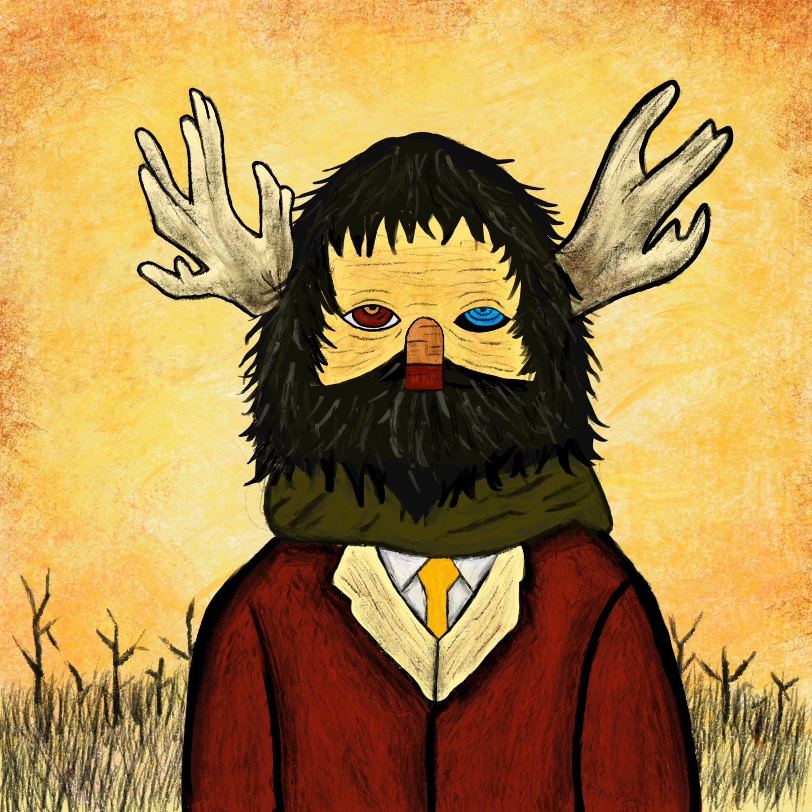

판타지적이고 화려한 것들에 매력을 느끼곤 했습니다. 축구보단 책읽기, 야외보단 집을 더
좋아하는 아이였습니다. 가족들은 예술에 흥미가 없어 흔한 영화관 조차 자주 가지
않았는데 이상하게도 저는 꿈이 화가였을 만큼 그림을 좋아했습니다. 그래서 인지
자주갔던 도서관에서도 그림 관련 도서를 자주 보았는데, 그때 처음 본 몬드리안의 그림은
충격적이었습니다. 화려하고 판타지적인 그림을 좋아하던 저에게는 상식을 깨는
일이였습니다. 단순한 선과 색 만으로도 신선한 감정을 줄 수 있다는 것을 , 그리고 과한
것만이 다가 아니라는 것을요!

것들에 대해서 호기심을 가집니다. 그 결과, 편식이 심하던 제가 호불호가 심한 해산물들도
잘 먹고, 내성적이었던 제가 무슨일이던 해보려다 보니 작곡, 피아노 연주, 극단생활, 모델
경험, 패션 디자인, 창업 등 얇고 넓은 지식이 많이 쌓였습니다. 누군가는 이러한 경험들이
헛된 시간이었다고 할 수 있지만 저는 가지가 되어 나무가 되는 일이라고 생각하며 소중히
여기고 있습니다. 물론 쌓아온 기술들도 힘껏 잘 써먹고 있죠.
기간에도 가족들은 당연하게 준비하지 못했고 수년 동안의 그리움은 자신의 슬픔을
이겨내느라 서로에게 주의하지 못한 계기가 되었습니다. 집은 저에게 안식처가 되어주지
못했습니다. 고등학생 때의 저는 항상 집 앞 아파트 계단에서 밤을 새우고 학교에는 웃으며
갔습니다. 계단에서 많은 질문을 자신에게 던졌습니다. “엄마, 나는 왜 태어났을까요?
존재의 의미는 무엇일까요? “수없이 이유를 되물어가며 저 자신을 지켜서 갔고 자신이
무엇을 좋아하는지 무엇을 하고 싶은지 자신에 대해 끊임없는 공부를 했습니다. 비록
힘들었지만 그만큼 저의 목표를 정하는데 중요한 순간이었습니다.

저를 미워하기도 하고 분노에 차 있기도 했지만 끊임없는 질문은 저를 단단하게 하고 제가
힘껏 살아갈 이유를 주었습니다. 또한 제가 사회에 긍정적인 효과를 주는 디자이너가 되고
싶은 계기가 되었습니다. 또 한 그 당시 저에게 유일하게 힘을 주었던 것은 스마트폰이었습
니다. 스마트폰에서 나온 수많은 미디어가 저와 함께 웃어주고 울어주고 공감해주고
있었죠. 저도 그런 디자인을 만들고 싶었습니다. 사람들에게 행복을 주는 디자인이요!
한번더 미디어의 힘과 디자인의 힘을 알게되는 순간이었습니다.
힘껏 살아갈 이유를 주었습니다. 또한 제가 사회에 긍정적인 효과를 주는 디자이너가 되고
싶은 계기가 되었습니다. 또 한 그 당시 저에게 유일하게 힘을 주었던 것은 스마트폰이었습
니다. 스마트폰에서 나온 수많은 미디어가 저와 함께 웃어주고 울어주고 공감해주고
있었죠. 저도 그런 디자인을 만들고 싶었습니다. 사람들에게 행복을 주는 디자인이요!
한번더 미디어의 힘과 디자인의 힘을 알게되는 순간이었습니다.
터라 예술이 하고싶어 패션디자인을 갔기 때문입니다. 당시에는 스스로 예술이 왜하고
싶은지 몰라 예술을 아름다운 것을 만드는 일이라 정하고 인간이 느끼는 가장 아름다운
감정이라고 생각한 성욕이 인간과 가장 맞닿아 있기 때문에 패션디자인이 저에게 적합하다
생각했습니다. 하지만 막상 시작한 패션디자인은 제가 무엇을 해야 하는지, 왜 해야 하는지
몰라 당장의 과제만 하기 바빴는데, 그 당시 만든 제 작품들은 스스로 만족하지
못해 아쉬움이 남았었습니다. 작품을 만들때 남들보다 다른 개성에만 집중하느라 특이하고
화려한것만 집중했는데 나의 작품이 아니라고 생각이 들었기 때문입니다.
어떤표현을 하고 싶고, 누구에게 왜 보여주고 싶은지 정확히 집어가며 나의 의도에 따라
천천히 쌓아가는 디자인이 보였습니다. 그런 매력에 디자인에 빠지게 되었습니다.
디자인은 설계라고 생각해요. 무언가가 부족한지 파악하고 그것들을 설계하는 일, 부족한
부분을 채워 사람들을 행복하게 해주는 일, 분명 배움에 있어서도 행함에 있어서도 어려운
일이겠지만 디자인에서만 볼 수 있는 매력이라고 생각합니다.
때 부터 청각과 시각을 전부 쓰는 영상이 존재했기에 시각만 쓰는 책들의 감동은 아마 조금
덜했을거 같습니다. 저 또한 어른이 되어가며 책보다는 영상에 빠져가는 중입니다. 가볍고
어디서나 볼 수 있는 스마트폰이 생기면서 이제는 책이 너무 무거운 매체가 되버렸습니다.
아직 책이 주는 배움과 영상이 주는 배움은 확연한 차이를 두고 있지만 현대 사람들에게
영상은 친구가 되었고 저 또한 제손 작은 상자에서 피어나는 빛에게 많은 위로를 받았습니
다.영상은 단순한 프로그램을 넘어 조형물, 포스터 등 많은 매체를 대체하고 있다고
생각합니다.

트렌디한 기술로써 많은 사람들에게 현실에서 느끼지 못한 감각들을 전달하고 싶습니다.
예로 들어 VFX, 드론, 짐벌, 특수 촬영등 조금 더 새로운 기술들을 공부하고 있습니다.
태기는 현재의 미디어에서 많은 영감과 위로와 기쁨을 받은 만큼 그 미디어를 통해 많은
사람들에게 똑같은 행복을 주고 싶습니다.